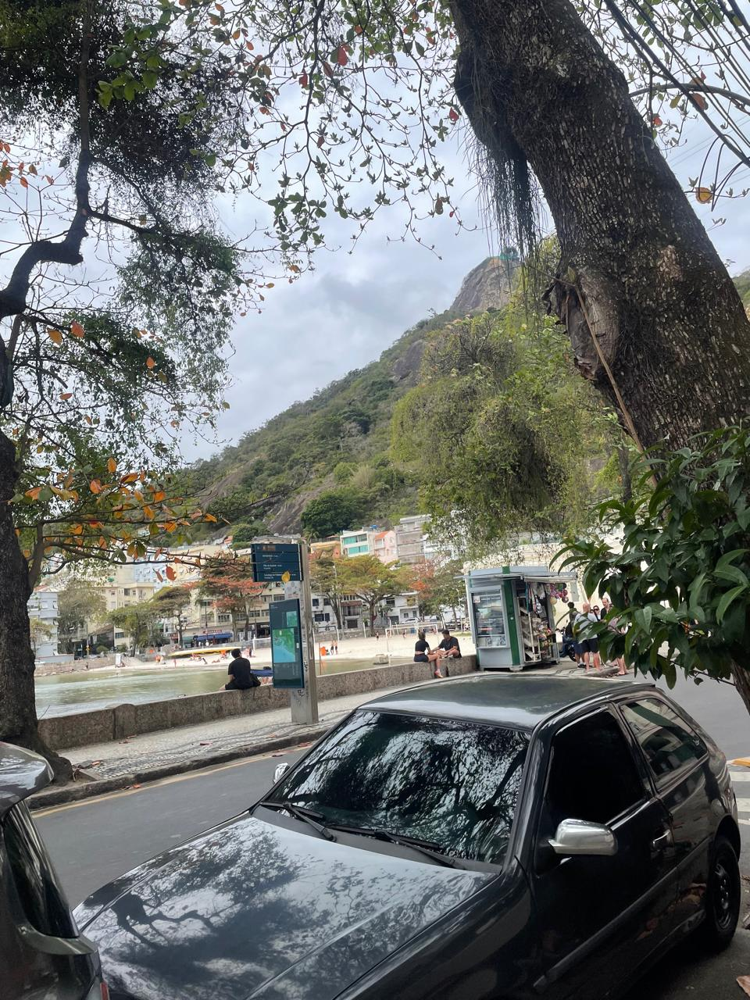
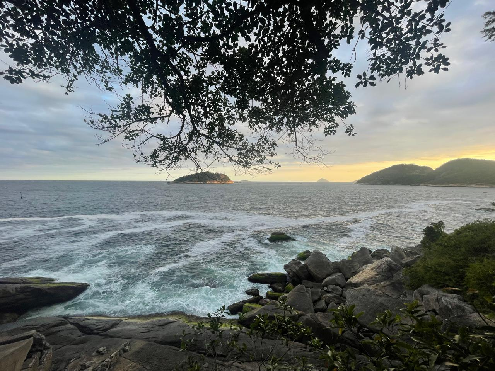

Although my main passion is (Neuro)Science, I love spending my time reading literature and working out.
Also, unfortunately, I’m an addict to gaming, especially Dota 2. You may find me there more than at Academia (sometimes).
I have a YouTube channel, but I don’t post videos that often anymore (maybe someday I’ll be back): HERE.
I write some things, as well, a few philosophical pieces and some observations about the world. They’re all in Brazilian Portuguese, but you may translate the texts and read them, if you want to: HERE.
(Finally, I must say that I really love Rio de Janeiro)

